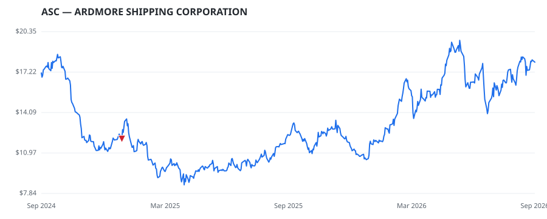

bullish · bearish · n/a — dots: price>SMA10 · SMA10>SMA50 · SMA50>SMA200 · up>down volume (20d)
Other · small cap
Members who bought ASC earned a dollar-weighted -38.5% from their disclosure dates, versus +14.0% for the S&P 500 over the same holding windows (-52.5% alpha).

▲ green = a disclosed purchase · ▼ red = a disclosed sale (plotted on disclosure date)
Ardmore Shipping Corp provides seaborne transportation of petroleum products and chemicals world-wide to oil majors, national oil companies, oil and chemical traders, and chemical companies, with its modern, fuel-efficient fleet of mid-size product and chemical tankers. The company markets its services directly to its customers and commercial pool operators and charters its vessels to them through a combination of spot, commercial pooling, and time-charter arrangements. The majority of its revenue is generated from spot voyages, which typically last less than three months. · website
| Member | Chamber | Out-performer | Disclosed buys $ | Return on buys |
|---|---|---|---|---|
| Virginia Foxx | house | — | $24K | -38.5% |
Disclosed $ figures are bracket midpoints — filings report ranges (e.g. $1,001–$15,000), not exact amounts.